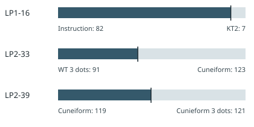

Section rune counts and F-omitted matches
Recalculate all 23 reported section counts and six arithmetic matches from source-marked page pieces, with a boundary diagram and source snapshot.
On this page
Several proposed relationships between Liber Primus sections depend on their rune counts. A public section-count spreadsheet lists 23 named pieces, both with and without the F rune (ᚠ). We saved its CSV as retrieved on 22 October 2026 and recalculated every row from the archived transcription. All 23 rows and six reported equalities match under the section boundaries below. These are arithmetic observations, not decoded text.
Why page ranges alone give different answers
The spreadsheet divides three pages at their printed section breaks. The text transcription marks each break with &. On LP1-16, the first 82 runes are Instruction and the last seven are its short closing title, called KT2 in the spreadsheet. LP2-33 begins with a 91-rune three-dot piece associated with Wing and Tree; its remaining 123 runes begin the Cuneiform section. LP2-39 ends that section after 119 runes, with a separate 121-rune three-dot piece following it. The nine-rune heading before the number panel on LP2-15 is also counted separately from Möbius.

This explains an apparent conflict with whole-page inventories: LP2-33–39 contain 1,680 runes, but the spreadsheet's Cuneiform piece is 1,468. The remaining 212 are the 91-rune piece at the start of LP2-33 and the 121-rune piece at the end of LP2-39. Both totals can be correct because they count different spans.
The six stated relationships
“Without F” means delete every ᚠ from the chosen span; it does not remove all headings or all first runes. The equations use the spreadsheet's section pieces, not whichever whole pages happen to be nearby.
| Value | One side | Other side |
|---|---|---|
| 2,883 | Spirals 1,145 + Branches 1,729 + pre-Möbius heading 9 | Spiral Branches without F: 3,008 − 125 |
| 1,894 | Koan 1, Loss of Divinity, Koan 2 and Instruction without F: 753 + 747 + 314 + 80 | Möbius after its nine-rune heading: 1,894 |
| 1,433 | Koan 2 and Spirals without F: 314 + 1,119 | Cuneiform without F: 1,468 − 35; also Wing and Tree with F: 1,433 |
| 1,814 | Koan 1, Loss of Divinity and Koan 2 without F: 753 + 747 + 314 | Sign Post and Spirals without F: 695 + 1,119 |
| 695 | Koan 1 with F minus KT1: 778 − 83 | Sign Post without F: 729 − 34 |
| 91 | Warning without F minus Parable without F: 183 − 92 | Wing and Tree three-dot piece with F: 91 |
The last comparison mixes two F-omitted counts with a total that retains F. Its numeric result is correct; omitting that distinction would make the recipe difficult to repeat. The 1,433 relationship has three expressions of the same value, not a sum of Cuneiform and Wing and Tree.
Complete section inventory
The table follows the saved spreadsheet's order. The two short titles on LP1-05 and LP1-16 are separate pieces; a source spelling such as “Spiral Brances” is preserved in the downloadable CSV and JSON, while the labels below use normal spelling. The final total spans all rune-bearing pages in both releases.
| Piece | Runes | F runes | Without F |
|---|---|---|---|
| Warning | 184 | 1 | 183 |
| Welcome | 515 | 25 | 490 |
| Some Wisdom | 74 | 1 | 73 |
| KT1 | 83 | 4 | 79 |
| Koan 1 | 778 | 25 | 753 |
| Loss of Divinity | 755 | 8 | 747 |
| Koan 2 | 319 | 5 | 314 |
| Instruction | 82 | 2 | 80 |
| KT2 | 7 | 0 | 7 |
| Sign Post | 729 | 34 | 695 |
| Spirals | 1,145 | 26 | 1,119 |
| Branches | 1,729 | 66 | 1,663 |
| Pre-Möbius heading | 9 | 1 | 8 |
| Möbius | 1,894 | 71 | 1,823 |
| Mayfly | 1,021 | 37 | 984 |
| Wing and Tree | 1,433 | 52 | 1,381 |
| Wing and Tree three dots | 91 | 3 | 88 |
| Cuneiform | 1,468 | 35 | 1,433 |
| Cuneiform three dots | 121 | 2 | 119 |
| Spiral Branches | 3,008 | 125 | 2,883 |
| LP2-54–55 | 308 | 6 | 302 |
| An End | 85 | 5 | 80 |
| Parable | 95 | 3 | 92 |
| Total | 15,933 | 537 | 15,396 |
Check the source and arithmetic
Run python scripts/audit_section_rune_counts.py --check from the repository or from the extracted reference-data bundle. The Python script counts stored runes, splits only at explicit & markers, checks all 23 published CSV rows, verifies that every rune-bearing page is covered exactly once, and recalculates the six equations. Download its complete JSON for source hashes, page pieces and every operand. Run python scripts/check_section_rune_counts.py for an independent Unicode-block recount, then python scripts/plot_section_splits.py --check to verify the figure.
These equalities were identified after exploring section combinations and choices to omit F. Their existence is reproducible, but there is no stated count of combinations searched, selected-beforehand prediction, or operation that turns the paired runes into plaintext. The separate 2,883-rune stream-alignment proposal still needs a fixed symbol-level test and matched controls. Equal lengths make such a test possible; they do not establish a key.
Manuscript pages discussed
LP1-05 · LP1-16 · LP2-15 · LP2-33 · LP2-39 · LP2-40 · LP2-53